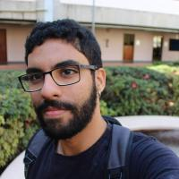

Kunumi — Tech Lead
Leading a 5–10 person data science team building short-term delinquency prediction models at national scale, using Python, Spark, Databricks, and LightGBM.

Tech Lead & Data Scientist · PhD Candidate in NLP
I work across machine learning, information retrieval, and large-scale data systems, in industry and academia. I'm a published researcher in IR/NLP, currently a PhD candidate at UFMG, with experience leading teams and building production-grade search and predictive modeling systems.
Kunumi — Tech Lead
Leading a 5–10 person data science team building short-term delinquency prediction models at national scale, using Python, Spark, Databricks, and LightGBM.
Kunumi — Data Scientist
Built a national-scale income prediction model on bank transaction and salary data, engineering features and training models with Spark, Databricks, and LightGBM.
MPMG project @ DCC/UFMG — Software Engineer
Built a governmental search engine over 1M+ documents using Transformers and Elasticsearch, now used daily by two teams of prosecutors.
MPMG project @ DCC/UFMG — Software Engineer Tech Lead
Led a ~10-person team building crawler configuration software supporting 5,000+ target websites.
IBGE project @ DCC/UFMG — Data Scientist
Built web scraping and price-retrieval pipelines covering 100+ shopping sites and 10,000+ products nationwide.
Studio Sol — Data Scientist
Maintained a music recommender system and analytics for 3M users; contributed to a Docker/Kubernetes microservice deployment.
Studio Sol — Data Scientist Intern
Implemented music recommender systems and data analysis over 1M+ songs and 100,000+ artists.
PhD Candidate in Computer Science — Natural Language Processing
M.Sc. in Computer Science — Information Retrieval
B.Sc. in Computer Science
Misinformation Span Detection in Videos via Audio Transcripts
On representation learning-based methods for effective, efficient, and scalable code retrieval
Intellectual dark web, alt-lite and alt-right: Are they really that different? A multi-perspective analysis of the textual content produced by contrarians
I've heard this before: Initial results on TikTok's impact on the re-popularization of songs
On the presence of abusive language in mis/disinformation
On extractive summarization for profile-centric neural expert search in academia
Languages & Platforms: Python · C · SQL · Bash · Web
Tools & Frameworks: PyTorch · Docker · Git · Elasticsearch · HuggingFace · Django · Jupyter · Transformers · Sklearn
Spoken Languages: Portuguese (Native) · English (Fluent) · Spanish (Beginner)